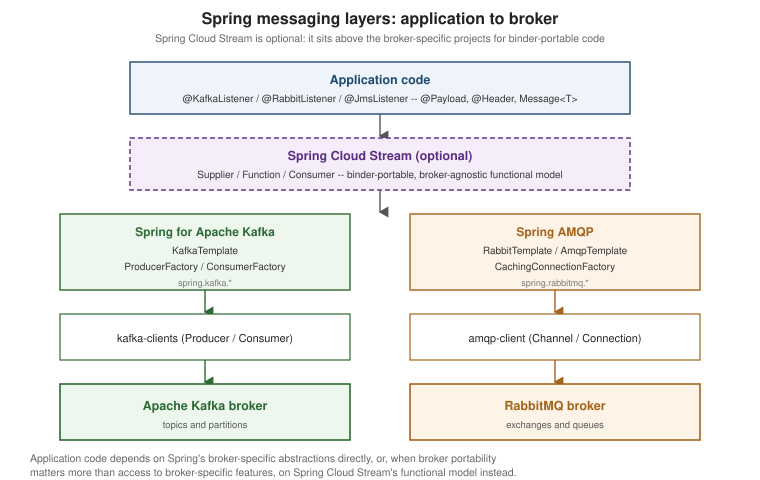

Spring Boot Messaging: Overview
|
This content was generated with the assistance of AI and should be verified against the official documentation before being relied on in production. |
Every other page under Messaging with Kafka and
API-First: Messaging dives straight into one broker’s Spring
integration. This page steps back one level: it is the map of Spring’s whole messaging surface — the shared
spring-messaging abstraction every @XxxListener annotation builds on, which starter pulls in which broker,
how Spring for Apache Kafka, Spring AMQP, Spring Cloud Stream, and Spring Integration relate to and differ from
one another, and where the deeper, broker-specific pages already living in this documentation set fit into that
picture. The baseline across this whole section is Spring Boot 4.1.x on Java 25 (Java 21 remains the current
LTS most production deployments still target), pulling in Spring for Apache Kafka 4.1.x, Spring AMQP 4.1.x, and
Spring Cloud Stream 5.0.x, against Apache Kafka 4.3.x and RabbitMQ 4.3.x brokers.
The shared spring-messaging model
Underneath every broker-specific annotation Spring Boot auto-configures, there is one shared abstraction module,
spring-messaging, that the Kafka, AMQP, and JMS integrations all build on rather than reinventing their own
message shape. A Message<T> pairs a typed payload with MessageHeaders, a read-only, string-keyed map of
metadata that travels alongside the payload — a Kafka record’s key, partition, and offset; an AMQP delivery’s
routing key and content type; a JMS message’s correlation ID — without the application code needing to know
which broker produced them. Listener methods rarely handle a raw Message<T> directly, though: an argument
annotated @Payload binds to the (optionally converted) message body, and one annotated @Header binds to a
single header by name, so a method signature reads as a plain, typed parameter list instead of unwrapping an
envelope by hand.
@KafkaListener, @RabbitListener, and @JmsListener are three broker-specific instances of exactly this one
idea: annotate a method, Spring Boot auto-configures a container that polls or subscribes on the application’s
behalf, converts the incoming payload, and invokes the method with @Payload/@Header-annotated arguments
resolved from the message and its headers. The template pattern mirrors this symmetrically on the sending
side — KafkaTemplate, RabbitTemplate/AmqpTemplate, JmsTemplate (or the newer JmsClient), and
PulsarTemplate all expose the same shape of send/convertAndSend operation, auto-configured from
properties with no manual @Bean required for the common case. The three listener families side by side:
@KafkaListener(topics = "orders.placed", groupId = "orders-service")
public void onOrderPlaced(
@Payload OrderPlacedEvent event,
@Header(KafkaHeaders.RECEIVED_KEY) String key) {
// event = the converted record value, key = the record's Kafka key
}See Spring Boot Reference — Apache Kafka
Support for @KafkaListener and the auto-configured KafkaListenerContainerFactory.
@RabbitListener(queues = "orders.placed")
public void onOrderPlaced(
@Payload OrderPlacedEvent event,
@Header(AmqpHeaders.RECEIVED_ROUTING_KEY) String routingKey) {
// event = the converted message body, routingKey = the AMQP routing key it arrived on
}See Spring Boot Reference — AMQP for
@RabbitListener and the auto-configured RabbitListenerContainerFactory.
@JmsListener(destination = "orders.placed")
public void onOrderPlaced(
@Payload OrderPlacedEvent event,
@Header(JmsHeaders.CORRELATION_ID) String correlationId) {
// event = the converted message body, correlationId = the JMS correlation ID header
}See Spring Boot Reference — JMS for
@JmsListener and the JmsTemplate/JmsClient auto-configuration. Full producer/consumer treatments of the
Kafka case, including manual and batch acknowledgment and dead-letter routing, already live on
Messaging with Kafka — this page does not repeat that material.
The figure below shows how these layers stack: application code depends either directly on a broker-specific Spring project, or, when broker portability matters more than access to broker-specific features, on Spring Cloud Stream’s functional model sitting above it.

Starters: which dependency pulls in which broker
Spring Boot’s messaging starters are not perfectly uniform — Kafka in particular has no dedicated
spring-boot-starter-kafka artifact, a common assumption that does not hold. The Spring Boot reference states
this plainly: "Apache Kafka is supported by providing auto-configuration of the spring-kafka project" — so
the correct dependency to add for Kafka is the plain spring-kafka artifact itself (as already shown on
Messaging with Kafka), not a spring-boot-starter-* coordinate.
AMQP, Pulsar, and the two JMS brokers Spring Boot supports out of the box do each have a real starter:
| Broker | Dependency to add | What it pulls in |
|---|---|---|
Apache Kafka |
|
|
RabbitMQ / AMQP |
|
|
ActiveMQ Artemis (JMS) |
|
The dependencies to connect to an existing ActiveMQ Artemis broker, plus the Spring JMS infrastructure. |
ActiveMQ "Classic" (JMS) |
|
The dependencies to connect to an ActiveMQ "Classic" broker, plus the Spring JMS infrastructure. |
Apache Pulsar |
|
A |
See Spring Boot Reference — Apache Kafka Support, Spring Boot Reference — AMQP, Spring Boot Reference — JMS, and Spring Boot Reference — Apache Pulsar Support for each starter’s exact dependency coordinates and what it auto-configures.
Choosing among Spring’s messaging projects
Four different Spring projects can all plausibly sit between application code and a broker, and picking the wrong one for a given job is the most common source of confusion in this area. They differ along three axes: how much the abstraction hides about the underlying broker, how easily code written against it moves to a different broker, and what programming model it exposes.
| Project | Abstraction level | Broker portability | Programming model |
|---|---|---|---|
Spring for Apache Kafka |
Low — close to the native |
None — Kafka only, by design. |
|
Spring AMQP |
Low — close to the native AMQP 0-9-1 model (exchanges, queues, routing keys), with RabbitMQ extensions (quorum queues, streams) exposed where relevant. |
Limited — targets AMQP-speaking brokers, RabbitMQ specifically for anything beyond the AMQP 0-9-1 baseline. |
|
Spring Cloud Stream |
High — a |
Good — the same functional bean runs against Kafka, RabbitMQ, Pulsar, or other binders, though broker- specific behavior (partitioning, dead-lettering) still surfaces through binder-specific properties. |
Functional — beans, not annotated methods; |
Spring Integration |
Highest — messages flow through a broker-agnostic pipeline of channels, endpoints, and adapters (files, HTTP, JMS, AMQP, and more, not only "a message broker" in the Kafka/RabbitMQ sense). |
Good, but broader in scope than pure broker portability — the same flow abstraction unifies transports that are not brokers at all (a filesystem poller, an FTP endpoint). |
|
As a rule of thumb: reach for Spring for Apache Kafka or Spring AMQP directly when the application is committed
to one broker and wants full access to that broker’s own concepts; reach for Spring Cloud Stream when the same
business logic genuinely needs to run against more than one broker, or when the functional
Supplier/Function/Consumer style fits the team’s conventions better than annotated listener methods; and
reach for Spring Integration when messaging is only one of several transports a flow needs to cross (a file
drop that ends up publishing to Kafka, an HTTP callback that triggers a JMS send). See
Spring Boot Reference — Spring
Integration for the auto-configuration details in that last row.
Auto-configuration, properties, and connecting to a broker
Spring Boot auto-configures the producer/consumer factories, templates, and listener container factories for
each broker entirely from properties — spring.kafka. for Kafka (bootstrap servers, consumer group,
producer/consumer/admin/streams/listener sub-namespaces) and spring.rabbitmq. for AMQP (host, port,
virtual host, SSL, cache, listener sub-namespaces), with no manual @Bean definitions needed for the common
case; the Kafka side is already covered in depth, property by property, on
Messaging with Kafka. The full property reference for both
namespaces lives in the generated appendix, not hand-copied here since it changes with every release: see
Spring Boot Reference — Common
Application Properties and search either namespace.
Pointing that auto-configuration at a real broker for integration tests, rather than hand-managing connection
properties, is what Testcontainers' @ServiceConnection annotation is for: it detects a @Container-managed
KafkaContainer or RabbitMQContainer and registers the matching ConnectionDetails bean, which Spring Boot’s
Kafka/AMQP auto-configuration then uses in place of spring.kafka./spring.rabbitmq. properties — with an
equivalent Docker Compose-based flow available for local development against the same images. That whole
workflow — container setup, @ServiceConnection, and the Docker Compose alternative — is covered end to end
on the dedicated Spring Boot: Testing Messaging page rather than repeated here.
Observability with Micrometer
Both Spring for Apache Kafka and Spring AMQP integrate with Micrometer’s observation API so that a producer
send or a listener invocation shows up as a span/metric pair automatically once a Tracer/MeterRegistry is
on the classpath, without hand-instrumenting each @KafkaListener/@RabbitListener method. Enabling it is a
one-line container-factory setting on each side:
@Bean
public ConcurrentKafkaListenerContainerFactory<String, OrderPlacedEvent> kafkaListenerContainerFactory(
ConsumerFactory<String, OrderPlacedEvent> consumerFactory) {
var factory = new ConcurrentKafkaListenerContainerFactory<String, OrderPlacedEvent>();
factory.setConsumerFactory(consumerFactory);
factory.getContainerProperties().setObservationEnabled(true);
return factory;
}See Spring for Apache Kafka Reference — Micrometer Observation for the producer-side KafkaTemplate equivalent and the specific spans/tags recorded.
@Bean
public SimpleRabbitListenerContainerFactory rabbitListenerContainerFactory(
ConnectionFactory connectionFactory) {
var factory = new SimpleRabbitListenerContainerFactory();
factory.setConnectionFactory(connectionFactory);
factory.setObservationEnabled(true);
return factory;
}See Spring
AMQP Reference — Micrometer Observation for the RabbitTemplate producer-side setting and the observation
naming conventions it follows.
Reactive messaging
Reactive Mono/Flux pipelines have a Kafka path too: Reactor Kafka wraps kafka-clients in a
KafkaReceiver/KafkaSender pair that produces and consumes as backpressure-aware Reactor publishers instead
of the imperative poll() loop KafkaConsumer exposes directly, and Spring Cloud Stream’s reactive Kafka
binder lets a bound function be written as Function<Flux<Order>, Flux<OrderPlaced>> rather than a plain
Function<Order, OrderPlaced>, for the same backpressure benefit inside the functional binding model described
above. Both sit on top of the same Reactor foundation covered in depth on
Reactive Programming with Project Reactor; this page does not repeat Mono/Flux, schedulers, or
backpressure semantics, only how they connect to messaging specifically.
Already documented elsewhere on this site
This page is intentionally thin on runtime detail because that detail already has a home. The table below points at where each closely related topic actually lives:
| Topic | Page |
|---|---|
|
|
Apache Avro schemas, the |
|
SmallRye Reactive Messaging — the Quarkus equivalent of this whole page’s |
|
AMQP-based remote chunking and remote partitioning for Spring Batch, wired over |